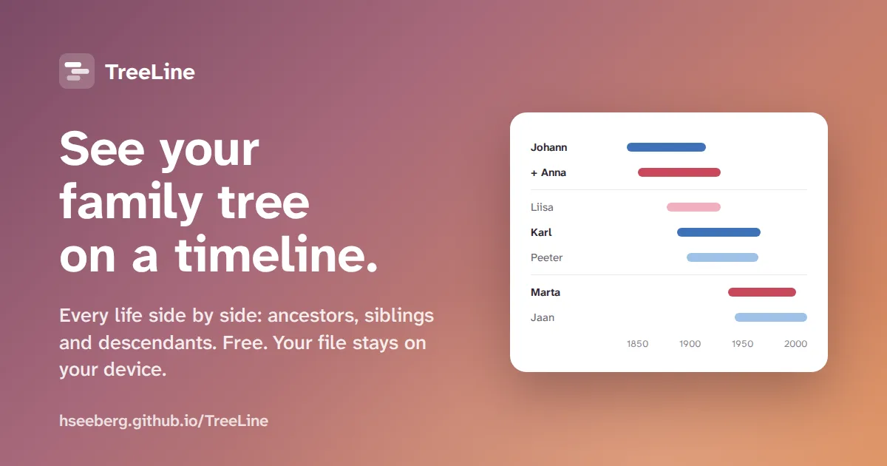

TreeLine
A web app that shows family trees on a timeline. Built with Claude Code.
Hannes Seeberg
Hands-on designer with over 25 years of experience in product design, service design and accelerating change. I turn business goals and customer insight into tangible results through AI-led analysis, design and code.
Monthly active users after I redesigned a scheduling tool for salespeople.
Steps to share a meeting link. Same product, new setup flow.
Reply rate to my 50+ outreach messages when hiring designers at a growth-stage SaaS company. Typical recruiter outreach gets 10–25%.